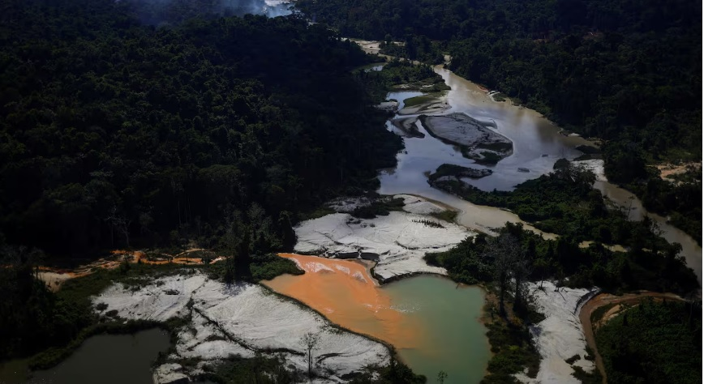
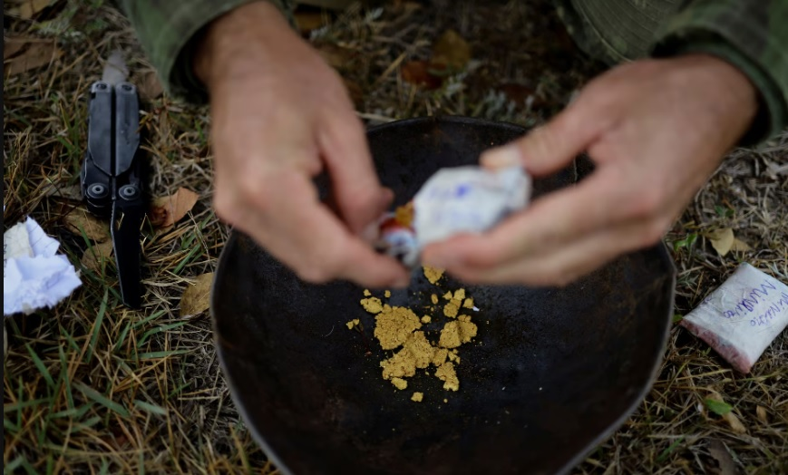

Ambiental
Amazonía sin fronteras:
La falta de investigaciones dificulta el combate al lavado de dinero de los crímenes ambientales en la Amazonía
A finales de septiembre, en un campamento en el territorio indígena yanomami, en lo profundo de la selva amazónica del norte de Brasil, docenas de hombres extraían oro ilegalmente con dragas mineras. En el lecho del río, las estructuras metálicas compuestas por enmarañados de rampas y engranajes aspiraban tierra y piedras sin cesar en busca del valioso mineral, agitando el cauce y desgarrando la senda natural por donde corría el agua. Mientras tanto, a cientos de kilómetros de ahí, la Policía Federal del país realizaba 16 operaciones de captura de personas acusadas de crear una compleja red de tráfico internacional de oro, cuyo esquema —que contaba con fraudes de permisos explotación minera en áreas protegidas por el Estado y el lavado de dinero a través de una compañía fantasma en Nueva York— había movido casi 6.000 millones de reales (o más de 1.000 millones de dólares).
En la región amazónica, que abarca ocho países, delitos ambientales como este se entrelazan cada vez más con el crimen organizado, según indican varios especialistas. Sin embargo, las nuevas rutas del lavado de dinero están dificultando que las autoridades identifiquen la conexión entre casos locales y operaciones transnacionales que convierten los recursos de la Amazonia en billones de dólares que alimentan directamente las arcas del narcotráfico. Un estudio reciente de la FACT Coalition, organización dedicada al entendimiento de prácticas de corrupción, reveló que uno de los mayores impedimentos para la lucha contra crímenes ambientales en la región ha sido la falta de seguimiento del dinero en las investigaciones. De los 230 casos analizados en países de la Amazonia entre 2014 y 2024, solo un tercio incluyeron una investigación financiera para rastrear las ganancias ilegales. El 76% de estos casos involucró el uso de empresas de fachada.
